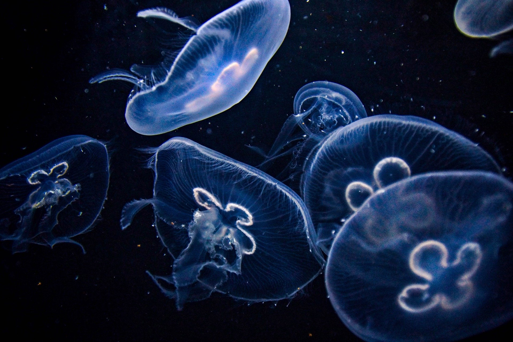
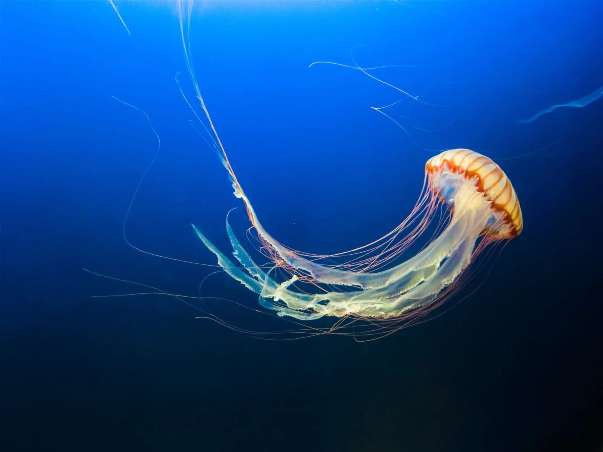
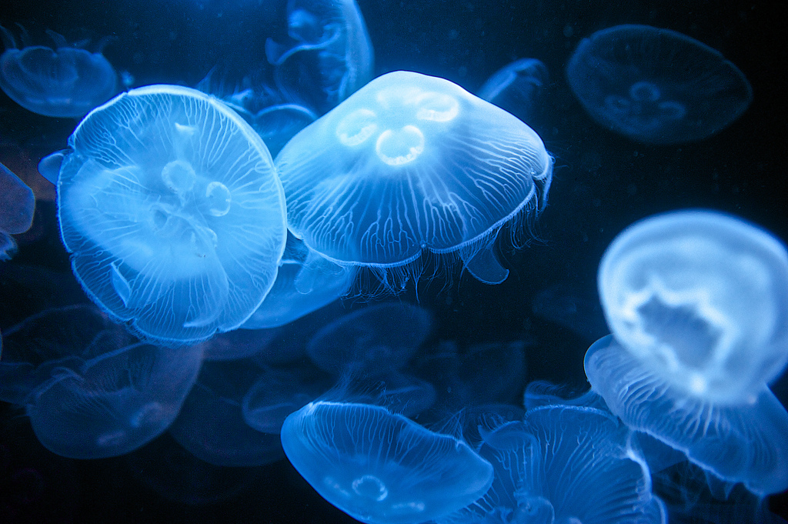
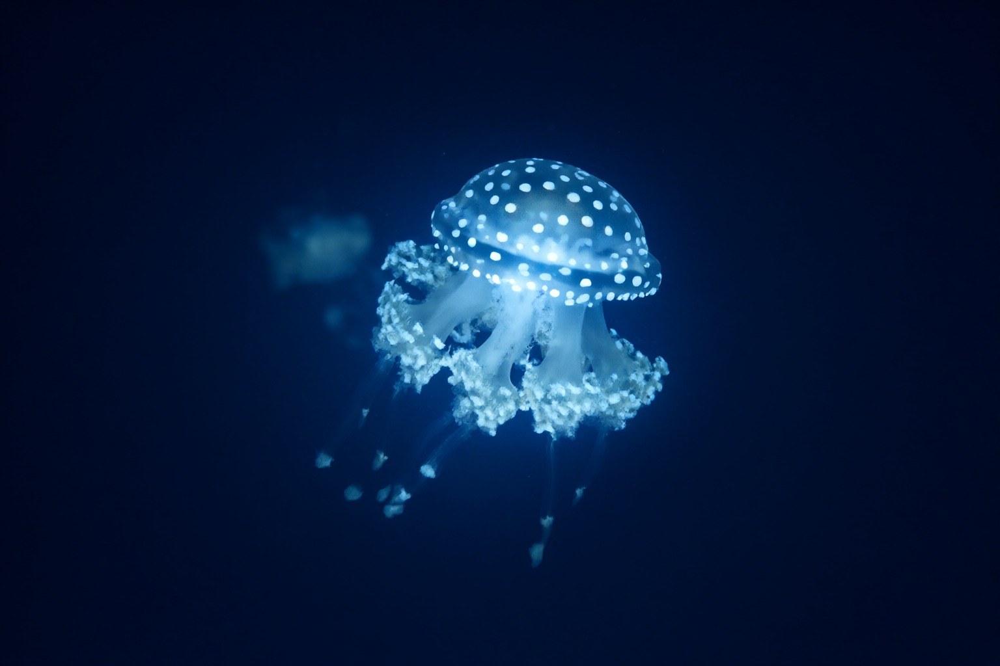
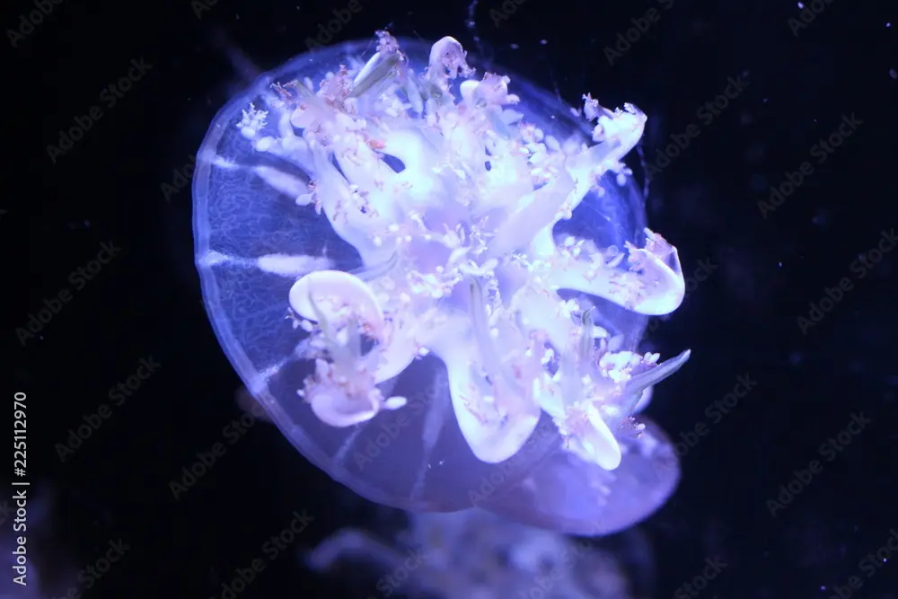
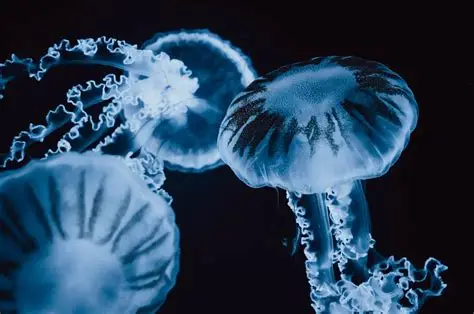

Naše medúzy
Medúzy nejsou jen exponátem — v naší záchranářské stanici slouží jako indikátor stavu mořského prostředí i jako cvičný materiál pro záchranáře, kteří se učí rozpoznávat nebezpečné druhy a poskytovat první pomoc při popálení. Proto k výběru jedinců, jejich péči a testování přistupujeme stejně zodpovědně jako k jakémukoli jinému chovu.
Výběr jedinců
Zdravotní stav
Jedinec musí mít neporušený zvon, symetrická ramena a žádné známky plísňové nebo bakteriální infekce.
Původ a legalita
Upřednostňujeme jedince z odchovů v zajetí nebo z legitimních sběrů; volně žijící populace neodebíráme bez povolení.
Vhodnost pro výcvik
Pro záchranářské účely vybíráme druhy, které jsou bezpečné pro manipulaci a jejichž chování lze spolehlivě sledovat.

Aurelia aurita
Datum narození: 14. 3. 2019 Povaha: Klidná, pomalá, málokdy se rozruší. Nechá se unášet proudem a nikdy nikam nespěchá. Trochu samotářka. Zdravotní testy: Test regenerace ramen — prošla (12. 6. 2025). Kontrola symetrie zvonu — v normě (3. 2. 2026). Klíčové úspěchy: Přežila tři roky v proměnlivé salinitě; mateřská kolonie vyprodukovala přes 2 000 efyr; používá se jako referenční druh při výuce. Rodičovské spojení: Dceřiná linie „Aur-7" — potomci žijí ve dvou akváriích.
899kč Rodokomen
Mastigias papua
Datum narození: 2. 8. 2021 Povaha: Zvídavá a aktivní, neustále krouží kolem světla. Má sklony k dramatu, když se změní proudění. Zdravotní testy: Kontrola symbiózy se zooxanthellami — výborná (20. 9. 2025). Test fototaxe — prošla (18. 1. 2026). Klíčové úspěchy: Nejrychlejší růst zvonu v celé skupině; úspěšně se adaptovala na umělé osvětlení; hvězda návštěvnických prohlídek. Rodičovské spojení: Matka linie „Papua-B", která dala vzniknout pěti generacím v zajetí.
1000kč Rodokomen
Cassiopea
Datum narození: 30. 5. 2020 Povaha: Tvrdohlavá a usedlá. Sedí dnem vzhůru a odmítá se hýbat, dokud ji k tomu nedonutí hlad. Trochu introvert. Zdravotní testy: Test pulzace — prošla (7. 4. 2025). Kontrola adherence k substrátu — prošla (11. 11. 2025). Klíčové úspěchy: Rekordně dlouhá nepřetržitá pulzace (72 hodin); úspěšná regenerace po poškození ramen. Rodičovské spojení: Zakladatelka klanu „Cass-1", nejstarší dochovaná linie v chovu.
899kč Rodokomen




